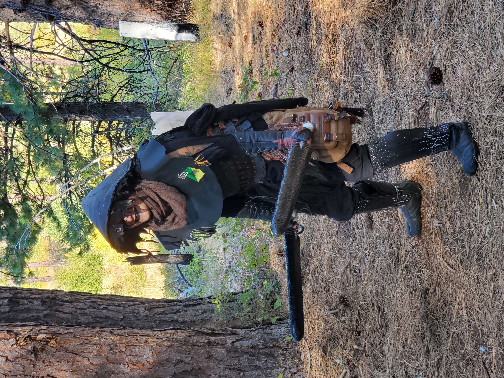
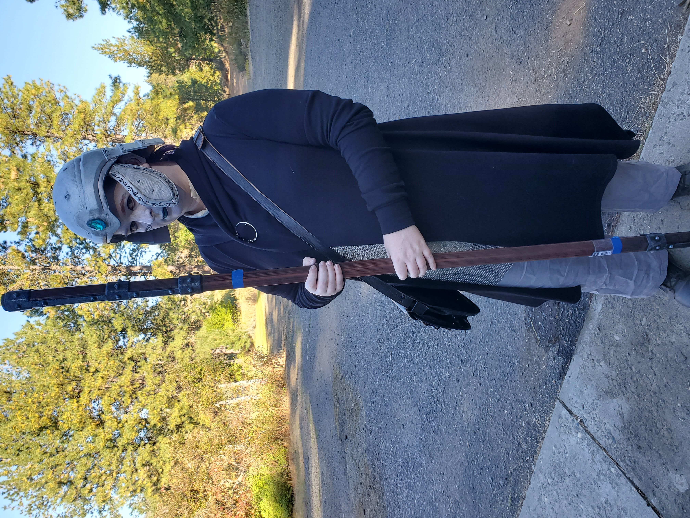

Introduction
Refuge is a medieval fantasy boffer larp, meaning that it takes its inspiration from books and movies like Lord of the Rings, and is usually focused on high-fantasy stories (as opposed to “low fantasy” - you can read more about this online, if you like). You don’t generally see gunpowder or other “technology” in Refuge: we stick to swords, shields, and archery for combat, and magic of course. That doesn’t mean you’re required to avoid all technology! It just is generally assumed to not be in game or explained through magical reasons. For example, if you’re wearing a diabetic monitor on your person and it’s visible, most people will just ignore it. Your cabin’s lights, on the other hand, will generally be considered to be because of magic. How you want to explain things is up to you, but generally the idea is that you should have medieval-ish technology for the most part, except in cases of safety.
Our clothing, or garb, is generally inspired by medieval clothing, but it’s not required to be strictly period. We’re closer to “ren faire” than “reenactment event.” So, if you want to wear fancy dresses in all the colours of the rainbow, or with glitter and stuff, or if you want to mix and match doublets with loose pants instead of hoes, feel right at home! You will want your clothing to be loose-ish fitting and very comfortable, and you generally want to larp in boots of some kind if you can (many choose boots from a local army/navy surplus store). Check out some photos of our games online if you’re looking for some inspiration.
Do note that you do not generally want to wear fairy wings, steampunk attire, and so on for our game. Fairy wings are reserved for people who are representing fae of some kind, generally, and steampunk isn’t our genre in general, but each game is different, and there aren’t hard and fast rules. If you have questions, check with your local plot team or players! You can generally find them on Discord or Facebook!
How to Start Larping
This is sounding fun, huh? Awesome! Welcome to our crazy hobby!
We have a rulebook at Refuge, but it is *large* and *extensive* and covers every rule in the game. You don’t need to know every rule in the game to start playing and playing well! This page contains the main rules you need no matter what else you play, while the Species Packets will help you pick your species by giving you some insight into their pros and cons and the Class Packets will give you insight into building your character and what rules you really need to know for your class.
What are Species and Classes? I’m glad you asked! Species are the creature type you will portray. This can be anything from a regular Human to a Halfling, Ogre, Dwarf, Elf, or even some more unique classes like Avani and Stone Elves. Go read the Species Packets after this to talk a bit about what those are and pick your favourite(s)! Your class is the job you have and the things you’re good at as your character. You might be a Fighter and good at swords or shields, you could be a Scholar and be a powerful magic user, or maybe you’re a sneaky Rogue looking to stab people in the back. There are more classes than just this, so be sure to read more about them (they’re really short blurbs to give you some ideas of what sounds fun), and then read through the packet or packets that sound the most interesting to you. No need to read them all! Just know what you do, and the rest of the players will help you learn the rules for other classes along the way!

Important Knowledge to Have
Here are some important things to know and terms I’ll use as we move forward with this packet.
In Game (IG) versus Out Of Game (OOG): In Game means what you’re saying or doing is the thing your character is saying or doing. It represents being in the game world and interacting with it intentionally. Out Of Game means you’re being yourself, not your character, and interacting with the “real” world as a person, not a character.
Player Characters (PCs) versus Non-Player Characters (NPCs): Refuge is a game where there is a division between people who write and act out the weekend’s story, and those who interact with the story with no knowledge of what is “intended” to happen. The local plot team will write a story for what they want to happen for a weekend (often part of a much larger story encompassing many weekends), and then have people called Non-Player Characters take on small roles as monsters, townsfolk, dragons, gryphons, pirates, whatever, to present situations for the PCs to experience the story. It’s not as hard as it sounds! It really comes down to saying “here’s a wacky situation, what will you do with it?” and then chaining those together intentionally. I’ve been doing Plot for years and I love it! Player Characters are the players who create their own characters who they play as for the entire weekend. NPCs might only be out for a few minutes or a few hours, but PCs will be out all weekend. It’s very similar to Dungeons and Dragons, where there are some characters the GM or DM controls (NPCs), and some the players control (PCs).
Physical Representations (Physreps): Physreps are the physical items that represent something in an in-game space. So, this could be the foam sword you use to do combat with representing a real sword, or a plastic vial with a tag in it to represent a potion, or a beanbag to represent mana and spells. Almost anything can be a physrep, although there are some specifics for how to craft physreps that we’ll give tags to make real items in our game, for safety reasons. Each item has its own physrep requirements, so be sure to pay attention to those, and look them up in the Refuge Rulebook before you bring something into game. At low levels, the most important ones are the bean bags used for magic, alchemy and arrows; sources (if you’re a magic user); weapons; and armour.
Policies: Every Refuge Chapter has its own special policies. Go to the website or Forums for any Chapter you plan on playing with and read through their policies. Be sure you’re familiar with those as well as this document before attending a game, even as an NPC, so you are prepared to play safely and in a way that is consistent with our guiding principles.
XP and the Database: In Refuge, your progression is measured in XP. New PCs start out with 25 XP and gain XP through either attending events as their character, attending events as an NPC and giving that event’s XP to their character, or by giving money to a Refuge Chapter in one way or another. (Hop on Discord or Facebook to ask about that if it’s of interest to you. It’s not hard, but it’s not really the point of this document.) You generally get granted the XP you earned from an event a few days after the event was attended, and you can spend it as soon as you get it! You can create your character and spend XP in our Online Database (https://db.refugelarp.org/). If you want to experiment a little and don’t want to lock your character in stone yet, you can create test characters in our “freeplay” Database (https://freeplay-db.refugelarp.org/). You register to attend events using the real Online Database (as opposed to the freeplay one), and that’s how we track your characters, each character’s XP, the events you’ve attended and plan on attending, etc. I strongly encourage you to start in the freeplay Database, play around a little, and then move to the real Online Database. You can’t break the freeplay Database, but it’s hard or impossible to go back and undo things in the Online Database, so know what you’re doing before you do it!
Body Points: Body Points measure how many hits you can take if you aren’t wearing any armour. Each class has a set progression of Body Points, and they go up based on how many XP you have. As you may expect, Fighters have a lot of Body Points, while Scholars don’t have many at all. The Online Database will tell you how many Body Points you have automatically once you choose a Species and a Class. There are some skills you can buy that will make this number go up. You can read more about that in your class packet, if it’s available to you at low levels.
Armour Points: When you take hits from monsters or other players, that damage is subtracted from your armour first, then your HP. When your armour gets to 0 (it will never go below), you can back up and Refit your armour on a 60-second-count, if you have the Refit skill. If you don’t, anyone who has the Refit skill can refit your armour for you. Once your armour is refit, it is restored to maximum points, and you can go back to fighting. There are effects in the game that allow you to shorten this 60-second-count. Check your Class Packet for more information, and feel free to ask people if they use a call on you you don’t understand.
Logistics Periods (LP): Time in Refuge is generally divided into either minutes or Logistics Periods. Most magic items last for a set number of LP, your skills are often usable only a certain number of times per LP, and many odd plot effects will last for certain numbers of LP too. LP last from about 5pm to about 5pm, but vary from chapter to chapter. Ask your logistics team at check-in or enquire with another player about when the next LP starts, and they’ll be able to tell you.
Changing Classes: Refuge has a fluid class system, which means you can always change your class to something else, if you have the free XP to make the change. Any time it’s beneficial for you to be another class, or if you just want to check what it would cost, go to the Online Database, open your character, and click on your class name. This will tell you what the XP cost is for changing classes. In some cases it might be negative (it costs more for you to be a different class), in others it might be 0 or even positive (you get XP back from being a different class)!
Character Rewrites: After your first game at Refuge, you’re able to completely rewrite your character for free! Just contact your local logistics team for help doing this. This means if you don’t like the way your character played for your first game, you can completely undo all your skill purchases and rebuy all your skills (or as many as you want) WITH the XP you got from your first game. Yahoo! This only works after your first game as a new player, though, and you don’t get to change your gear, only your skills. This means, if you want to switch from Scholar to Fighter, you’ll need to find weapons and armour in game - you don’t get new tags at check-in. Don’t worry, though! There are plenty of people willing to help you out with acquiring new items for cheap or even free at many games. If you have questions about this, reach out to Logistics, or touch base with your local players on Facebook and Discord.
Character Sheet and Battle Board: You will receive your character sheet and battle board at check in (often referred to as Logistics) every game you attend. You get your character sheet, which has all your body totals, XP totals, species, class, etc on it. You will also get a battle board, which has all your skills listed on it. Skills that are “per LP” skills will have little circles either beside or below them. Once you use that skill for the LP, put a small slash through that circle to indicate you have spent the skill. Marshals may ask to check your battle board, or you may want to show it to someone to ask how a thing works, and if you haven’t been honest about marking your battle board, that’s not great. You don’t have to stop in the middle of a fight to do this, either! Once the fight is over (which could be a while for some fights), mark off everything you used in the fight. People will often remind others to mark off battle boards after town fights, but don’t forget, even if they don’t say anything about it!
Gear and Your First Game: Your first game, at check in, you’ll get a bunch of starting gear and coin. Gear is represented by small tags that you affix to the items in question (your sword tag gets taped to your sword, etc). The exception is armour: you don’t need to staple this to your armour or anything, just carry it on your person. Coin is actual metal coins with special inscriptions on them. They go in increments of 10 from 1 copper to 10 copper = 1 silver, 10 silver = 1 gold, and 10 gold = 1 platinum. You’ll mostly be dealing in silver and copper in your first game, but you might wind up with your first few gold by the end of it. Your gear tags are selected by you to represent the items you’ll be bringing in to game. Not everything needs a gear tag: only weapons, armour, potions and elixers, spell books, shields, things like this. You don’t need a tag for your belt pouch, belt, clothing, pen, etc. You will probably want a physrep for every piece of gear you plan on bringing in (so if you have 2 sword tags, a spell book and 3 alchemy globes, bring 2 sword physreps, a spellbook physrep and at least 3 packets for the alchemy). This only happens for your first game. BE SURE TO SAVE YOUR TAGS. You will NOT get new ones at the next game you attend, even if you lose them or they get damaged at game. You can usually pre-select this gear when you register for the event. Read the appropriate class packet to learn more about gear, and talk to your local logistics team if you have questions about gear.
Counted Actions: Some actions in game are “counted actions.” To do a counted action (like drinking a potion or elixir), you simply slowly count to three while acting out whatever you’re doing. Some actions, like drinking a potion, do not need a verbal component. Some actions, like performing a killing blow, do. When in doubt, say it aloud, and others will help you figure it out. For example, you could say to a downed friend: “I feed you a potion 1, I feed you a potion 2, I feed you a potion 3” then tell them what the effect was (“5 Spell Healing”). Most counted actions take the same format, but they may be silly or weird: “I run into the woods 1, I run into the woods 2, I run into the woods 3,” or “I consume the flesh of this dead animal 1…” or whatever. They may have IG effects afterwards (“I engulf you 1, I engulf you 2, I engulf you 3, ENGULF!”), but if you don’t know what that does, ask the person doing it to you and they’ll be happy to explain it.

Combat


Refuge is a very combat-focused game. That’s not to say that you can’t have fun if you aren’t engaging in combat! Quite the contrary! We have loads of players who never get into combat who have a ton of fun, but it is a central focus of the game, so if you want to fully engage with the game, please be aware of that.
Refuge is a lightest-touch combat game, meaning when you’re striking your opponents, you should be using a very light tap with your weapon, not the full force of a swing.
There are two main ways to engage in combat as a PC: with foam weapons or with packets. Foam weapons can be made by hand (see the directions in the Refuge Rulebook under the “Weapons” header in Chapter IX: Weapons and Armour), or they can be store-bought. If you choose to buy a weapon, feel free to check in with your local players on Discord and Facebook to discuss what weapons are the best and most likely to be safe enough for gameplay. Also, pay attention to the minimum and maximum lengths, and any other requirements for the weapons (such as staves needing a middle section labeled) in the “Weapons” section (there’s a handy chart a page or two down from the section header that goes over all this information). Packets for magic, arrows, and alchemy are made of a square of cloth and approximately 30 ml of birdseed rubber-banded into a small sphere with a tail. There are much better directions for making them in the first few paragraphs of Chapter IX: Magic.
Safety in combat and out of it is very important to Refuge as an organization. Some safety notes to think about:
Charging: Charging is when you get so close to another player that you can touch them with your outstretched hand, and is not allowed in combat at Refuge. Please give each other enough room to swing weapons and not get smacked in the head or face or whatnot.
Shield Bashing: Shield Bashing is hitting another player with your shield. This is also not allowed. The only thing that should come in contact with shields are weapons and packets, and you definitely shouldn’t shove your shield at someone’s weapon any harder than is absolutely necessary to block the weapon hit.
Pages: Pages are players who are not allowed to (or have chosen not to) engage in combat for various reasons. Some pages may be too young to fight, others may have medical conditions, or emotionally not want to get hit, but still want to play. Pages are denoted with a YELLOW headband with the word PAGE written on it. DO NOT HIT THEM WITH ANY KIND OF WEAPON OR PACKET EVER. They should know their own rules for how to escape combat, but if you want to affect them with something, you point the thing that would deliver the attack at them and say “Page, 3 Normal” (you’d point a weapon in this case) or “Page, With Eldritch Force I Disarm your potion!” (you’d point a spell packet in this case) or whatever. The page can call defenses, but cannot return the attack. You must be within 10 feet of the Page to do this. Some chapters have intermediate pages. Ask about those rules. If you would like to become a Page, simply ask your local chapter’s logistics team for more information.
Pinning Weapons: Pinning Weapons is when you use your strength to prevent an opponent’s weapon from being able to move. This is forbidden. We’re a lightest-touch game, and feats of strength with weapons are not permitted.
Where to Strike: You cannot strike the head, face, neck, hands or groin with packets or weapons during combat. If you do, the person will call “No effect” and not take the effect you hit them with.
Marshals: If you have any questions about the rules of the game, please refer to the Marshals of your local Chapter. These are players who have taken a test to prove they are rules experts, and are in charge of managing the rules questions on the field.
Bleed: In LARP, Bleed is a term used to refer to the emotion mix that happens between player and character. Sometimes, when your character has a really good day, you feel better as a player! Sometimes the opposite is true: if your character dies or has a rough day with a monster or something, you might feel badly as a result. That’s NORMAL. It happens. However, you should be aware of it. If you need to take a time out to calm down or step away from something because it’s giving you a hard time, do so. Keep in mind, Bleed goes the other way too: sometimes if you’re having a bad day, your character will be unreasonably grumpy. It’s okay. Take a deep breath, ask people around you for help processing if you need it, and go from there.
Drugs: Intoxicant drugs are NOT ALLOWED AT GAME. Alcohol, Marijuana, and any other type of legal, questionably legal, or illegal intoxicant of any kind should not be consumed in such a way that it will affect your experience at game. Do NOT go off site (or stay on site) and get drunk before game, then come back and play or anything of the sort. If you are on prescription drugs, please consider carefully how taking them could interfere with gameplay and safety and consult with a doctor about the situation. Smoking, vaping and caffeine (as well as any non-intoxicant drugs) are generally fine to consume on site, although there may be a designated smoking area for any kind of smoking and vaping.
In Game Things Your Character Should Know About
Wards: You will see a lot of buildings with large W’s outside of them, which means the building either has a Ward or a Wizard Lock up. In such a situation, only someone who is invested in the Ward (was in the building when it was cast) can let you in or out. Ask about them in game if you have more questions.
Necromancy: Necromancy is against the law everywhere in this world. Most people have very strong opinions on how evil it is, and those who don’t consider it bad generally don’t say much about their opinions, because people get killed for using it. Here’s how each of the different classes might interact with Necromancy. YOU DO NOT need to have your views match anything outlined here. It’s just a starting place.
- Fighters: As a Fighter, you can’t directly cast Necromancy yourself, so you don’t have to worry about it quite so much. Feel free to ask questions about Necromancy from those around you.
- Celestial Scholars: As a Celestial Scholar, you don’t directly cast Necromancy, so you probably don’t have to worry about it quite so much. You might have a strong opinion, or you might not!
- Earth Scholars: You have the power of Necromancy at your very fingertips!!!! Choose your relationship with it wisely. If you are a Necromancer, you probably use it sparingly, and you DON’T talk to people about it. If you’re pro-Necromancy, but don’t use it yourself, that’s also probably something you don’t talk about much. If you hate the stuff, you probably proclaim it loudly, but maybe you have reason not to?
- Celestial Adepts: You can’t cast Necromancy, so this isn’t as important to you. Maybe you have strong opinions, maybe you just don’t care, maybe you follow the law of the land. It’s up to you!
- Earth Adepts: Again, you have the power to cast Necromancy as soon as you memorize your first Healing spell or prepare your first elemental magic charge from your Source. Maybe you’re a recovering Necromancer and vow never to use it again? Maybe you’ve never touched it and are repulsed by the idea of casting Necromancy and “damaging the Earth?” Maybe you’re so new to spells that you aren’t sure what your answer is. Either way, pick an idea and run with it.
- Rogues: Rogues don’t generally do Necromancy either. They are historically assumed to be more lenient towards it because they give the impression of being more lenient people, but nothing says you have to be that way!
- Celestial Spellswords: You don’t cast Necromancy, so your opinions are yours and yours alone. How would you feel if an Earth-casting fellow whipped out some Chaos magic? Would that bother you, or would you let bygones be bygones? Only you can tell.
- Earth Spellswords: Once again, you have the power to cast Necromancy. How do you feel about it? Is that a power that draws you in with its allure and promises of greater and greater ability and power? Or do you resist the temptation to drift into dangerous magics?
- Artisans: Artisans who specialize in Brewing can both cast and brew Necromancy. Even those that don’t probably know someone who can. So it’s good to have an idea of what your character thinks about Necromancy, even if they don’t have access to it themselves. That being said, your character might be naive enough to believe that people don’t actually use it, or might be fine with people brewing it, but not casting it, or something entirely different. That’s up to you!
Traps: In some chapters, traps are common, in others, they aren’t. How your chapter handles traps is really up in the air, but there are a few things to know about them. If you trigger a trap, you need to call a hold and go find a Marshal immediately. Bring them back to where you triggered the trap, then have them explain what happens next. You will generally know you’ve triggered a trap because there will be a loud sound of some kind, like a mouse-trap snapping or a popping of bubble wrap. If you aren’t sure, go find a Marshal and ask anyway. If you have further questions about traps, read the trap rules in the rulebook.
Entering Buildings: If you need to enter a building that isn’t a public space OR your own personal cabin, you need a Rogue Marshal. A Rogue Marshal is a Marshal who will make sure you don’t take anything that isn’t stealable (like someone’s gold watch - which is not stealable - as opposed to their gold coins - which are), will resolve traps if there are any about, and otherwise help you with your activities. Even if you don’t want to take something, you MUST have either someone staying in the cabin with you, or a Rogue Marshal. DO NOT ENTER ANY CABIN THAT YOU ARE NOT STAYING IN UNACCOMPANIED, unless NO ONE is staying in that cabin during the game.
Stealing: Stealing stuff happens. If you would like to steal stuff, that’s totally in game. If you’re worried about your stuff being stolen, that’s also a normal in game thing. In general, only tagged items and coin can be stolen from a person (Swords? Spell books? Intoxicate elixirs? Sure. Epipens? Gold watches? That really cool stone bracelet the person wears that’s not a magic item? Nope.). Be sure to check with your local rules committees about any special rules they have about stealing. Some chapters only permit stealing from people when the bag/item/whatever in question is not on the person, or if you have the person incapacitated and do a searching action. To do this, touch a person with a weapon on the shoulder and say, “I search you 1, I search you 2, I search you 3.” The person being searched may ask you to “detail search”, at which point you say where you’re looking. Keep it PG-13.
Looting: Similar to stealing, if you drop a monster or another player, you can loot them. In most cases, to loot a monster, you go up to them and say “I search you”. There’s no 3-count for this most of the time. If it’s a player, you need to do the 3-count searching action, usually. Different chapters may have different local policies, so ask if you have questions!
Potions and Production: Potions and Elixirs are just some of the things that can be made in game. They are generally represented by a small tag inside of a vial of some kind, although they might just be the tag if it’s picked up as loot from a monster. You should put this potion tag either into a vial as soon as you can, or leave it in your bunk if you don’t have a potion vial. PCs should generally only carry around potions and elixirs in vials, unless they’ve just been picked up. Only some people can tell you what is in a vial. Your class packet will tell you if you can do this. If you can’t, find someone who can to help you out. ANYONE can use vials, even if they don’t know what’s in them! Don’t be cheesy about this - if you have 5 or 6 unknown potions in your pocket, and one of them will fix your friend of what is wrong with them, please don’t “conveniently” figure it out and feed them the right one on the first try every time. This is cheating and could get you thrown out of the game if it’s a repeated offense.